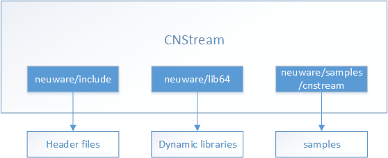

编程模型¶
本章重点介绍了CNStream在寒武纪软件栈是如何工作的，也介绍了文件目录以及如何快速开始使用内置模块进行编程。
寒武纪软件栈¶
CNStream作为寒武纪视频结构化分析特定领域的框架，在整个寒武纪应用软件栈中起着承上启下的作用。CNStream能快速构建自己的视频分析应用，并获得比较高的执行效率。用户无需花费精力在一些底层的细节上，从而有更多时间关注业务的发展。下图展示了CNStream在软件栈中的位置关系。

寒武纪软件栈框图¶
文件目录¶
在CNStream SDK目录下，主要由以下部分组成：
头文件：CNStream头文件存放在
include文件夹下，包含所有的数据类型和接口。动态库：CNStream动态库存放在
libcnstream.so文件中，位于lib64目录下。示例程序源码：一系列示例程序存放在
samples文件夹下。
CNStream文件目录结构如下图所示：
CNStream文件目录结构图¶
编程指南¶
CNStream是典型的基于pipeline和模块机制的编程模型。支持在pipeline注册多个预置模块或者自定义的模块。这些模块之间通过隐含的深度可控的队列连接，使用一个JSON的文本描述组件间的连接关系。
应用开发的通用编程步骤如下：
创建一个pipeline对象。
读入预先编排的JSON文件构建数据流pipeline。
创建消息监测模块，并设置到pipeline。
启动pipeline。
动态增加数据源。
更多详情，请查看 Readme。